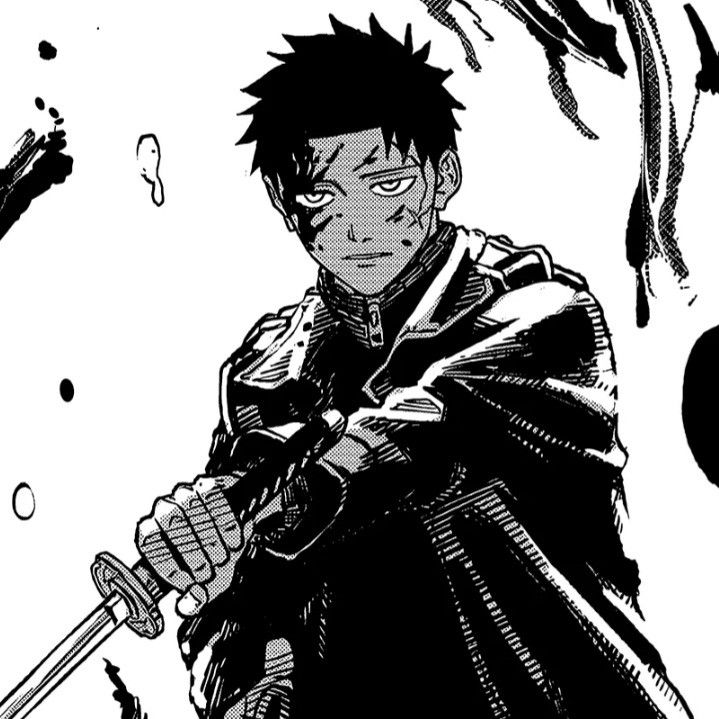
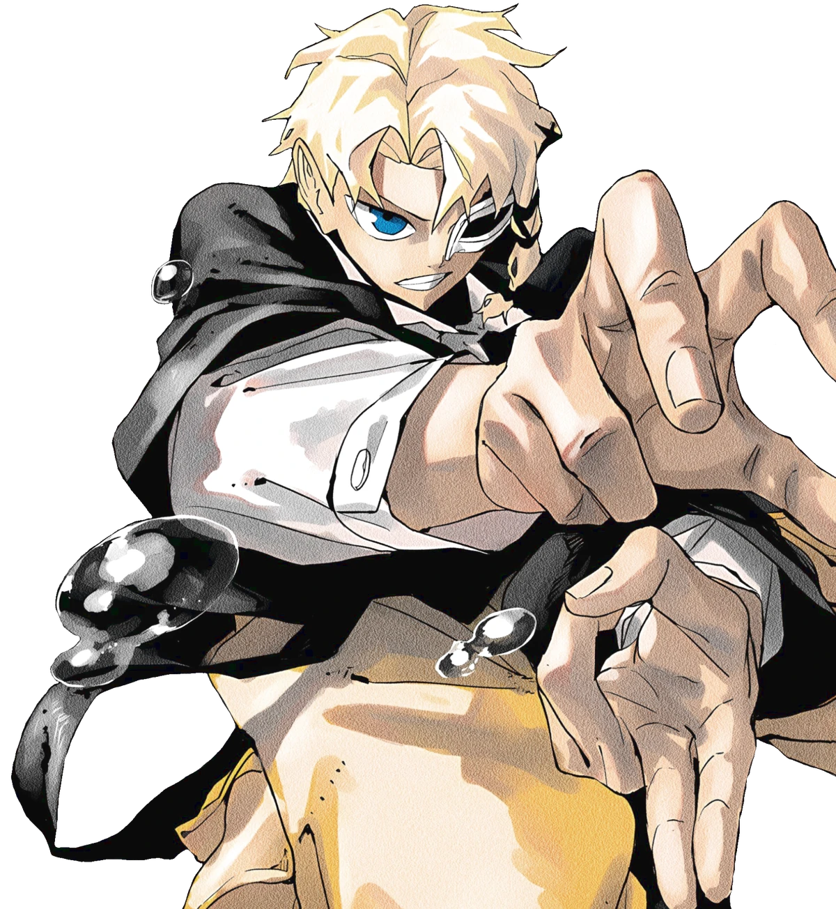
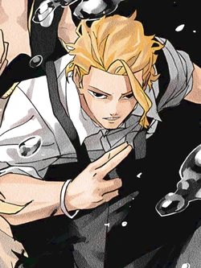
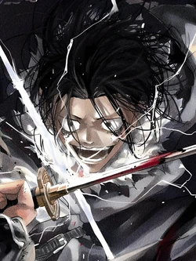
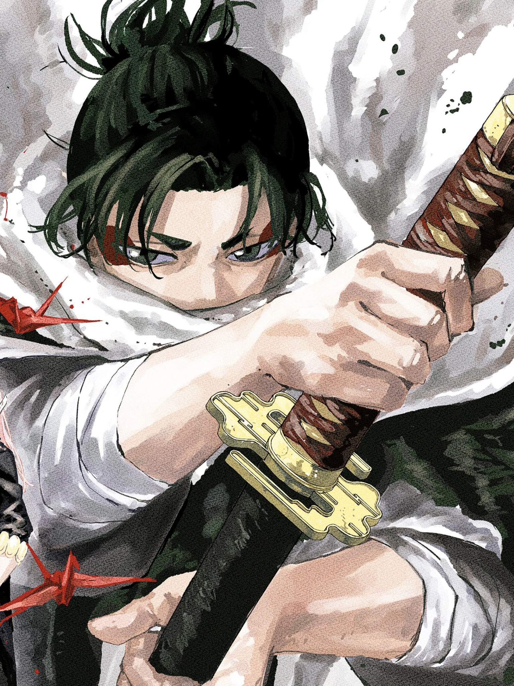
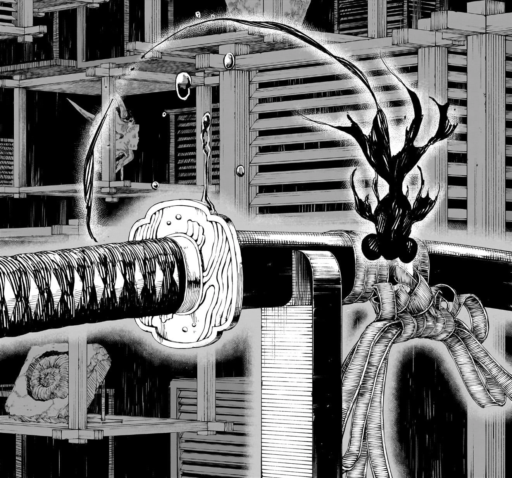
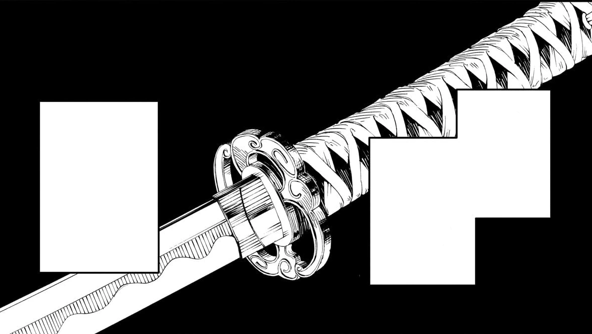
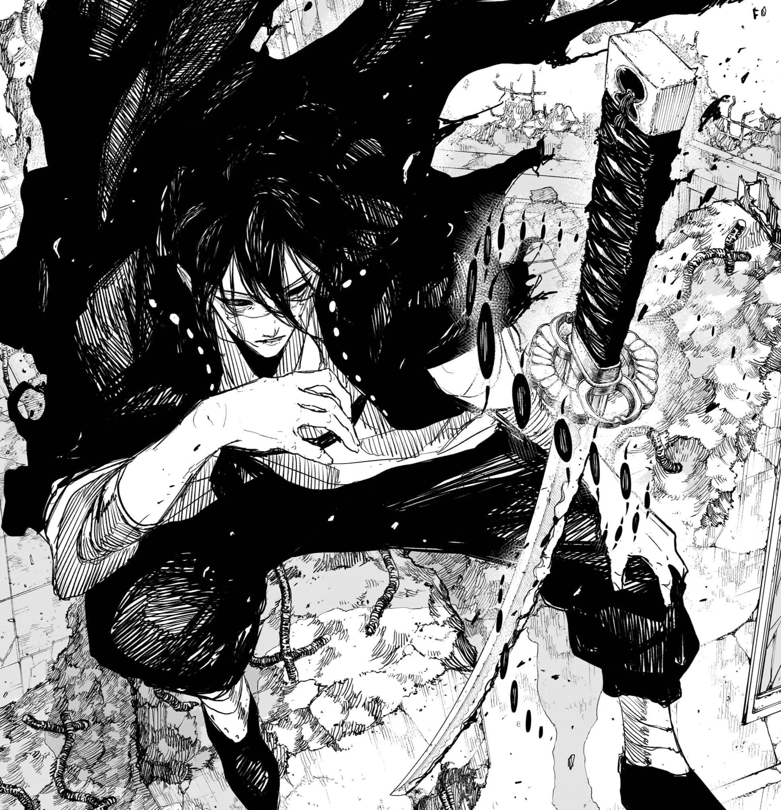
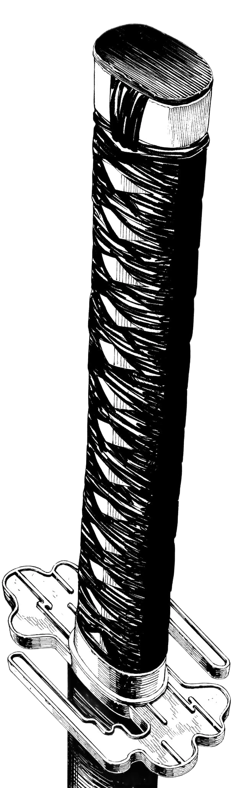
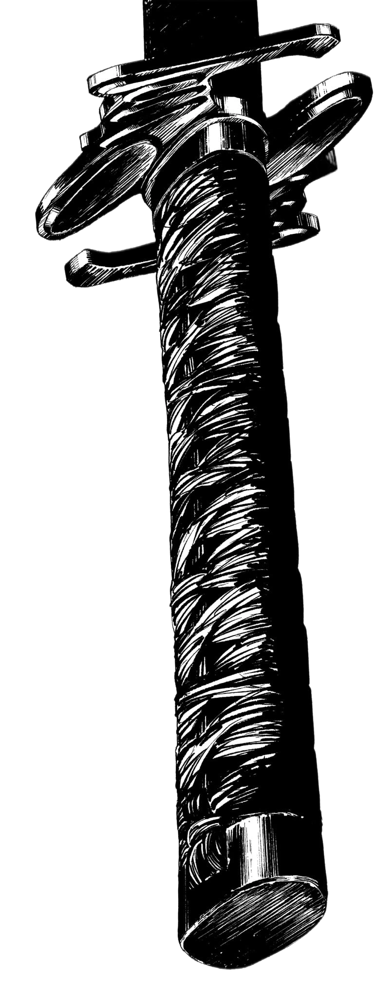

Protagonista
Chihiro Rokuhira
Filho do ferreiro Kunishige. Sua jornada está ligada ao legado de seu pai e às lâminas roubadas.
O legado das lâminas
Entre na história de Chihiro Rokuhira. Explore os personagens, conheça o universo e descubra as Espadas Encantadas.
Conheça alguns dos personagens centrais de Kagurabachi.

Filho do ferreiro Kunishige. Sua jornada está ligada ao legado de seu pai e às lâminas roubadas.

Integrante do clã Sazanami que se torna aliado de Chihiro. Possui grande potencial mágico.

Aliado experiente de Chihiro e antigo conhecido de Kunishige.

Uma das combatentes mais poderosas associadas ao Kamunabi.

Criminoso que empunhou Kuregumo e entrou em conflito com Chihiro.

A história combina feitiçaria, disputas entre organizações e o legado de um ferreiro extraordinário.
O ferreiro responsável pelas Espadas Encantadas. Seu trabalho mudou o curso da Guerra Seitei.
As habilidades mágicas variam entre os personagens e influenciam os conflitos da história.
Organização ligada à proteção do Japão e ao controle de ameaças relacionadas à feitiçaria.
Grupo envolvido no assassinato de Kunishige e no roubo das seis lâminas da Guerra Seitei.
Conflito histórico no qual as lâminas criadas por Kunishige tiveram papel decisivo.
As armas estão ligadas aos seus portadores, aos acontecimentos da guerra e à jornada de Chihiro.
As sete lâminas criadas por Kunishige incluem seis armas da Guerra Seitei e Enten, criada posteriormente. A lista distingue as lâminas nomeadas das que ainda não têm nome confirmado.

Portador: Chihiro Rokuhira.
Criada por Kunishige após a Guerra Seitei. É a lâmina utilizada por Chihiro.

Portadores conhecidos: Ibuki Misaka e Genichi Sojo.
Também conhecida como Cloud Gouger. Foi destruída durante os acontecimentos envolvendo Chihiro e Sojo.

Portadores associados: Akemura Soga; Kyora Sazanami a utilizou no conflito do leilão. Yura busca a lâmina.
É conhecida também pelo título Shinuchi. As relações de posse variam ao longo da trama.

Portadores conhecidos: Yoji Uruha e Hiruhiko.
Uruha foi seu portador durante a guerra. Hiruhiko posteriormente estabelece um contrato com ela.

Portador conhecido: Seiichi Samura.
Lâmina associada ao espadachim cego Samura, conhecido por sua extraordinária habilidade.

Portador associado: Subaru Urita.
A identidade oficial desta lâmina ainda não está confirmada nas fontes consultadas.

Portador: ainda não confirmado.
A existência da lâmina faz parte do conjunto original de seis armas da Guerra Seitei.
Atenção: informações sobre portadores e acontecimentos posteriores podem conter spoilers do mangá.